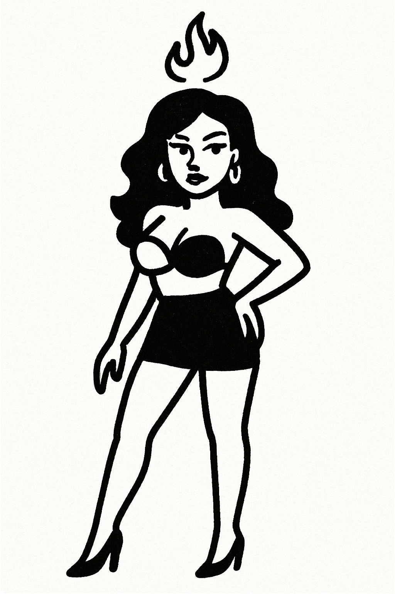

Chess AI Battle
AI Level
0
1
2
3
4
5
6
7
8
9
10
11
12
13
14
15
16
17
18
19
20
Your Side
White
Black
Twitter用户:
查询
开始比赛
重置游戏
AI Commentary

—
标准国际象棋规则
Move History
Moves:
Vibing Leaderboard
Play Again
View Scores